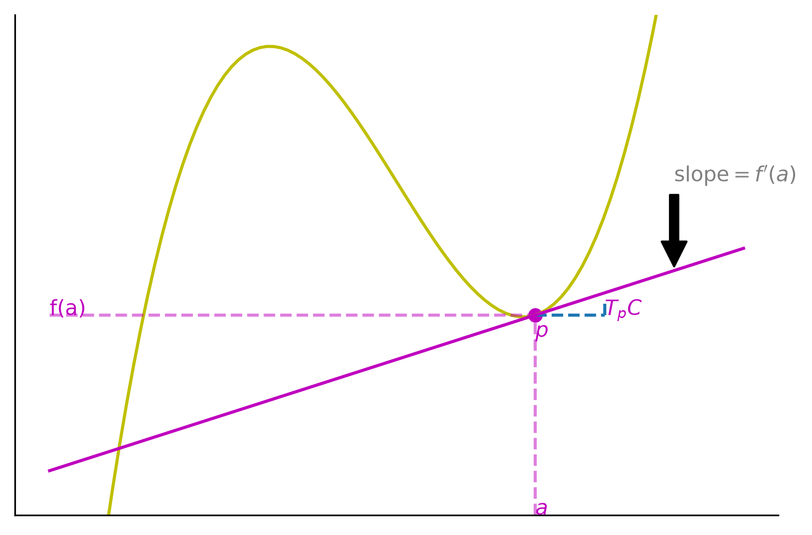
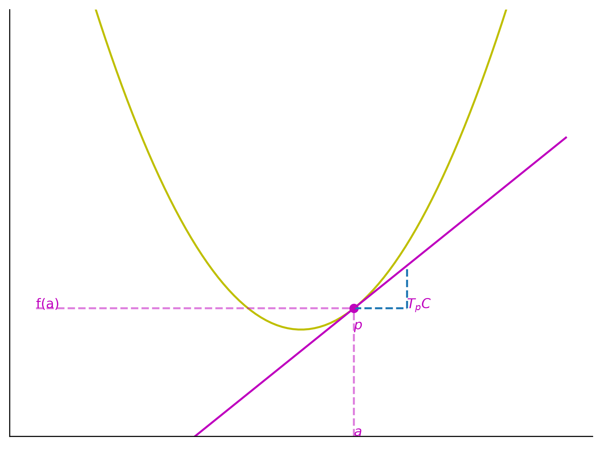
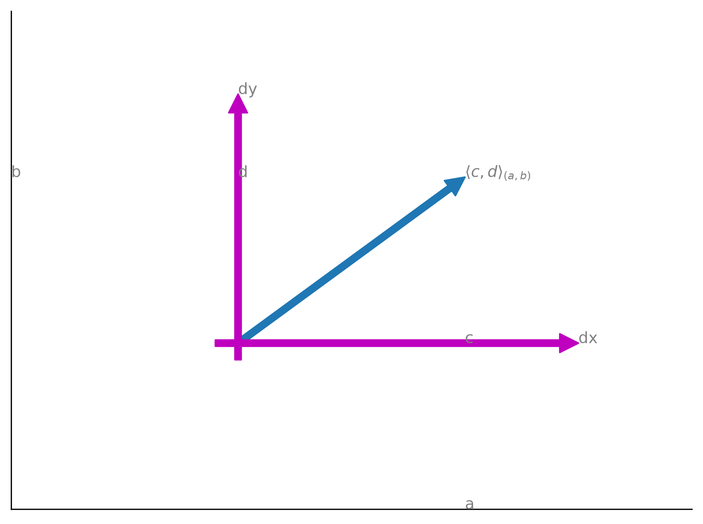

Tangent Space
Definition
Suppose \(C \subseteq \mathbb{R}^2\) is a curve and \(p \in C\). The tangent space to \(C\) at \(p\), \(T_pC\) is the set of all vectors tangent to \(C\) at \(p\) (Flanders 1989).
Example
Let us say we have a curve \[y = f(x)\], with a point \[p = (a, f(a))\]. A tangent vector at that point can be given by \[\vec v = \langle 1, f^{\prime}(a) \rangle\] where \[\langle \cdot, \cdot \rangle\] is an inner product. Then we can formulate the tangent space
\[T_pC = \text{span} \{ \langle 1, f^{\prime} \rangle \} = \{ \langle c, c f^{\prime}(a) | c \in \mathbb{R} \}.\]
"""Plot the tangent space to a cubic curve at a point.
The curve is ``y = x**3 - 10 * x`` and the point is ``(2, -12)``, whose
tangent line is ``y = 2x - 16``. The figure marks the point ``p``, the
tangent space ``T_pC``, the slope, and the pullbacks onto the coordinate
axes.
"""
from __future__ import annotations
from pathlib import Path
import matplotlib.pyplot as plt
import numpy as np
def plot_tangent_space_cubic(
output: str | Path = "figures/tangent_space_cubic.png",
) -> Path:
"""Draw the tangent space to the cubic at ``(2, -12)`` and save it.
Parameters
----------
output : str or pathlib.Path
Destination of the rendered PNG. Parent directories are created.
Returns
-------
pathlib.Path
The path that was written.
"""
fig = plt.figure()
ax = fig.add_axes((0.1, 0.2, 0.8, 0.7))
ax.spines[["top", "right"]].set_visible(False)
ax.set_xticks([])
ax.set_yticks([])
ax.set_ylim([-30, 15])
# Plot of function
x = np.linspace(-5, 5, num=100)
y = x**3 - 10 * x
ax.plot(x, y, color="y")
# Unit tangent vector
ax.plot([2, 3], [-12] * 2, "--", color="tab:blue")
ax.plot([3, 3], [-11, -12], "--", color="tab:blue")
# Tangent space
ax.plot(x, 2 * x - 16, color="m")
ax.text(3, -12, r"$T_pC$", color="m")
ax.scatter(2, -12, color="m")
ax.text(2, -14, r"$p$", color="m")
ax.annotate(
r"slope$=f^{\prime}(a)$",
xy=(4, -8),
xytext=(4, 0),
arrowprops=dict(facecolor="black", shrink=0.05),
color="grey",
)
# Pullbacks
ax.plot([2] * 2, [-30, -12], "--", color="m", alpha=0.5)
ax.text(2, -30, r"$a$", color="m")
ax.plot([x.min(), 2], [-12] * 2, "--", color="m", alpha=0.5)
ax.text(x.min(), -12, "f(a)", color="m")
output_path = Path(output)
output_path.parent.mkdir(parents=True, exist_ok=True)
fig.savefig(output_path, dpi=300, bbox_inches="tight")
plt.close(fig)
return output_path
def main() -> None:
"""Console-script entry point."""
plot_tangent_space_cubic()
if __name__ == "__main__":
main()
How do we differentiate between points on \(C \subseteq \mathbb{R}^2\) and vectors in \(T_p C \subseteq \mathbb{R}^2\)?
We can create a coordinate system on \(C\)
\[(x,y): C \mapsto \mathbb{R}^2\]
\[(x,y)(p) = (x(p), y(p))\]
and a coordinate system on \(T_p C\):
\[\langle dx, dy \rangle : T_p C \mapsto \mathbb{R}^r\]
\[\langle dx, dy \rangle = \langle dx(v), dy(v) \rangle\]
Thus \(x: C \mapsto \mathbb{R}\) and \(y: C \mapsto \mathbb{R}\) are combined to get a coordinate vector in the ambient space.
Similarly, \(dx: T_pC \mapsto \mathbb{R}\) and \(dy: T_pC \mapsto \mathbb{R}\) are combined to get a coordinate vector in the tangent space.
Example
Let \(y = x^2\), then the coordinate vector is \((x,y)(p) = (a, a^2) \in C\). Similarly \(\langle dx, dy \rangle (v) = \langle 1, 2a \rangle \in T_pC\) where \(v\) is a tangent vector to the function.
"""Plot the tangent space to a parabola at a point.
The curve is ``y = x**2`` and the point is ``(1, 1)``, whose tangent line is
``y = 2x - 1``. The figure marks the point ``p``, the tangent space
``T_pC``, and the pullbacks onto the coordinate axes.
"""
from __future__ import annotations
from pathlib import Path
import matplotlib.pyplot as plt
import numpy as np
def plot_tangent_space_quadratic(
output: str | Path = "figures/tangent_space_quadratic.png",
) -> Path:
"""Draw the tangent space to the parabola at ``(1, 1)`` and save it.
Parameters
----------
output : str or pathlib.Path
Destination of the rendered PNG. Parent directories are created.
Returns
-------
pathlib.Path
The path that was written.
"""
fig, ax = plt.subplots()
ax.spines[["top", "right"]].set_visible(False)
ax.set_xticks([])
ax.set_yticks([])
ax.set_ylim([-5, 15])
# Plot of function
x = np.linspace(-5, 5, num=100)
y = x**2
ax.plot(x, y, color="y")
# Unit tangent vector
ax.plot([2, 2], [1, 3], "--", color="tab:blue")
ax.plot([1, 2], [1, 1], "--", color="tab:blue")
# Tangent space
ax.plot(x, 2 * x - 1, color="m")
ax.text(2, 1, r"$T_pC$", color="m")
ax.scatter(1, 1, color="m")
ax.text(1, 0, r"$p$", color="m")
# Pullbacks
ax.plot([1] * 2, [-5, 1], "--", color="m", alpha=0.5)
ax.text(1, -5, r"$a$", color="m")
ax.plot([-5, 1], [1] * 2, "--", color="m", alpha=0.5)
ax.text(-5, 1, "f(a)", color="m")
fig.tight_layout()
output_path = Path(output)
output_path.parent.mkdir(parents=True, exist_ok=True)
fig.savefig(output_path, dpi=300, bbox_inches="tight")
plt.close(fig)
return output_path
def main() -> None:
"""Console-script entry point."""
plot_tangent_space_quadratic()
if __name__ == "__main__":
main()
The equation \(\langle dx, dy \rangle (v) = \langle 1, 2a \rangle\) implies the familiar result that \(dy = 2a \cdot 1 = 2 a dx \implies \frac{dy}{dx} = 2a = f^{\prime}(a).\)
Example
Note that \[\mathbb{R}^2 = \text{span} \{ (1,0), (0,1) \} = \{ (x,y) | x,y \in \mathbb{R} \}.\]
That means that
\[T_p \mathbb{R}^2 = \text{span} \{ \langle 1, 0 \rangle, \langle 0, 1 \rangle \} = \{ \langle dx, dy \rangle | dx, dy \in \mathbb{R} \}.\]
If you want to keep track of the tangent space at different points, you can denote \(\langle dx, dy \rangle_p\) for the tangent space at point \(p\).
Example
Suppose we have \(\langle 1, 2 \rangle_{(1,1)}\), we can think of the differentials as another set of axes as visualized below.
"""Visualize a tangent vector in terms of the differential axes.
The figure draws the vector ``<c, d>`` at the point ``(1, 1)`` against the
differential axes ``dx`` and ``dy``, with the ambient coordinates ``a`` and
``b`` marked on the axes.
"""
from __future__ import annotations
from pathlib import Path
import matplotlib.pyplot as plt
def plot_tangent_space_axes(
output: str | Path = "figures/tangent_space_axes.png",
) -> Path:
"""Draw a tangent vector against the differential axes and save it.
Parameters
----------
output : str or pathlib.Path
Destination of the rendered PNG. Parent directories are created.
Returns
-------
pathlib.Path
The path that was written.
"""
fig, ax = plt.subplots()
ax.spines[["top", "right"]].set_visible(False)
ax.set_xticks([])
ax.set_yticks([])
ax.set_xlim([0, 3])
ax.set_ylim([0, 3])
ax.annotate("", xy=(2, 2), xytext=(1, 1), arrowprops=dict(color="tab:blue"))
plt.text(2, 2, r"$\langle c,d \rangle_{(a,b)}$", color="gray")
ax.annotate("", xy=(1, 2.5), xytext=(1, 0.9), arrowprops=dict(color="m"))
ax.annotate("", xy=(2.5, 1), xytext=(0.9, 1), arrowprops=dict(color="m"))
ax.text(2.5, 1, "dx", color="grey")
ax.text(1, 2.5, "dy", color="grey")
ax.text(2, 1, "c", color="grey")
ax.text(1, 2, "d", color="grey")
ax.text(2, 0, "a", color="grey")
ax.text(0, 2, "b", color="grey")
fig.tight_layout()
output_path = Path(output)
output_path.parent.mkdir(parents=True, exist_ok=True)
fig.savefig(output_path, dpi=300, bbox_inches="tight")
plt.close(fig)
return output_path
def main() -> None:
"""Console-script entry point."""
plot_tangent_space_axes()
if __name__ == "__main__":
main()
# 1-FormsDefinition
A 1-form is a linear function \(\omega : T_p \mathbb{R}^n \mapsto \mathbb{R}\).
Proposition
For a 1-form \(\omega : T_p \mathbb{R}^n \mapsto \mathbb{R}\) it holds that \(\omega \in (T_p \mathbb{R})^{*}\) where \((T_p \mathbb{R})^{*}\) is the dual space of the tangent space \(T_p \mathbb{R}\).
Example
Given \(\mathbb{R}^2\) and \(T_p \mathbb{R}^2\) and \(\omega : T_p \mathbb{R}^2 \mapsto \mathbb{R}\) be linear:
\[\implies \omega (\langle dx, dy \rangle) = adx + bdx = \langle a, b \rangle \cdot \langle dx, dy \rangle\]
which also equals
\[\vert| \langle a, b \rangle \vert| \operatorname{scalar\_projection}_{\langle a,b \rangle} \langle dx, dy \rangle .\]
This leads to an intuition that a 1-form is a multiple of the scalar projection on to the same line.
Example
Let \(\omega : T_p \mathbb{R}^n \mapsto \mathbb{R}\) then
\[\omega ( \langle dx_1, \ldots, dx_n \rangle ) = \sum_{i=1}^n a_i dx_i\]
Example
Define \(\omega (\langle dx, dy \rangle) = 3dx + 2dy.\) What line does \(\omega\) project vectors onto?
- The line is in the direction \(\langle 3, 2 \rangle\) b/c \(\omega ( \langle dx, dy \rangle ) = \langle 3,2 \rangle \cdot \langle dx, dy \rangle\)
Notice that \(\langle 3,2 \rangle\) is parallel to \(\langle 1, \frac{2}{3} \rangle\) which entails that \(dy = \frac{2}{3} x.\)
Example
Suppose \(\omega\) scalar projects onto the line \(dy = 2dx\) with length of 3. Find \(\omega .\)
We know that \(\omega (\langle dx, dy \rangle) = \langle a,b \rangle \cdot \langle dx, dy \rangle .\) We need \(\langle a, b \rangle\) to be parallel to \(\langle 1, 2 \rangle\) because \(\langle 1, 2 \rangle\) is the vector in the direction of the line \(dy = 2dx\).
So \(\langle a, b \rangle = \langle a, 2a \rangle\) which requires that we have \[\vert| \langle a, 2a \rangle \vert| = 3 \] .
So \[\vert| \langle a, 2a \rangle \vert| = \sqrt{a^2 + 4 a^2} = 3 \implies a \sqrt{5} = 3 \implies a = \frac{3}{\sqrt{5}}\] . So \(b=\frac{6}{\sqrt{5}}\)
\[\implies \omega (\langle dx, dy \rangle) = \frac{3}{\sqrt{5}} dx + \frac{6}{\sqrt{5}} dy\]
Example
Supposing \(n=2\) and \(\omega_1 \wedge \omega_2 : T_p \mathbb{R}^2 \times T_p \mathbb{R}^2 \mapsto \mathbb{R}\) then what is \(\omega_1 \wedge \omega_2 (v_1, v_2)\) where \(v_1, v_2 \in \mathbb{R}^2\) ?